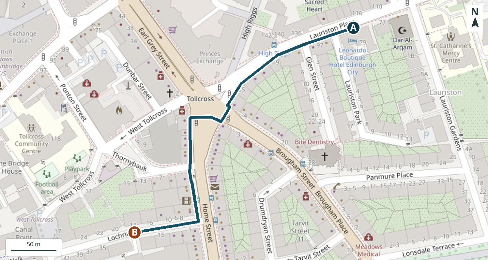
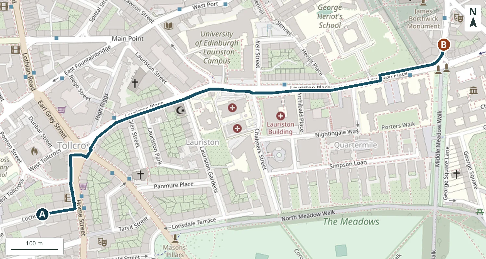
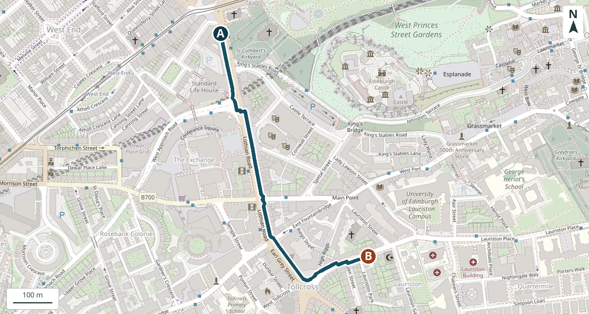
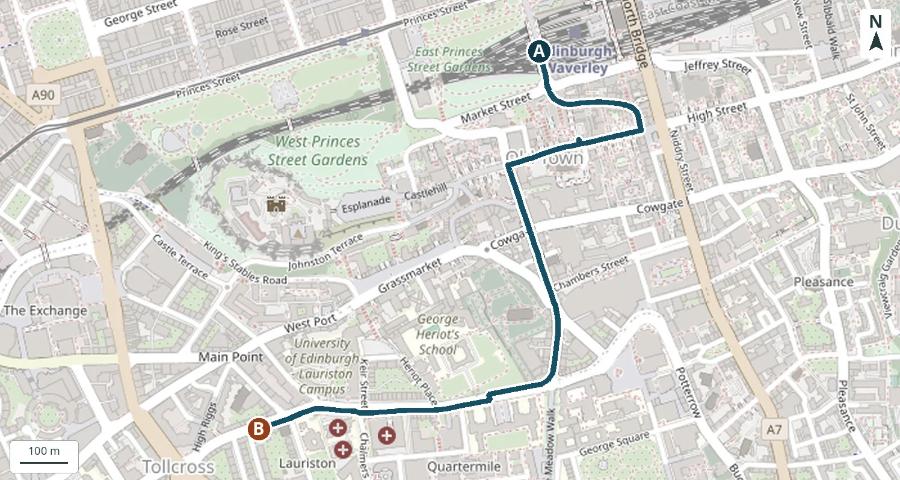
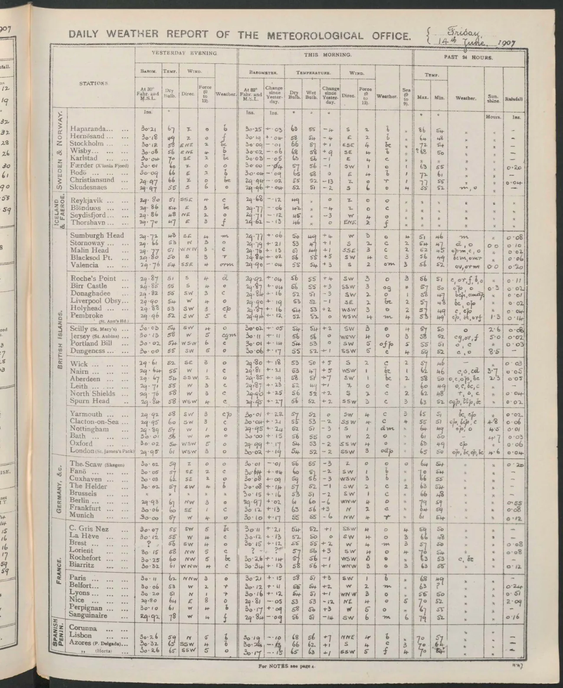
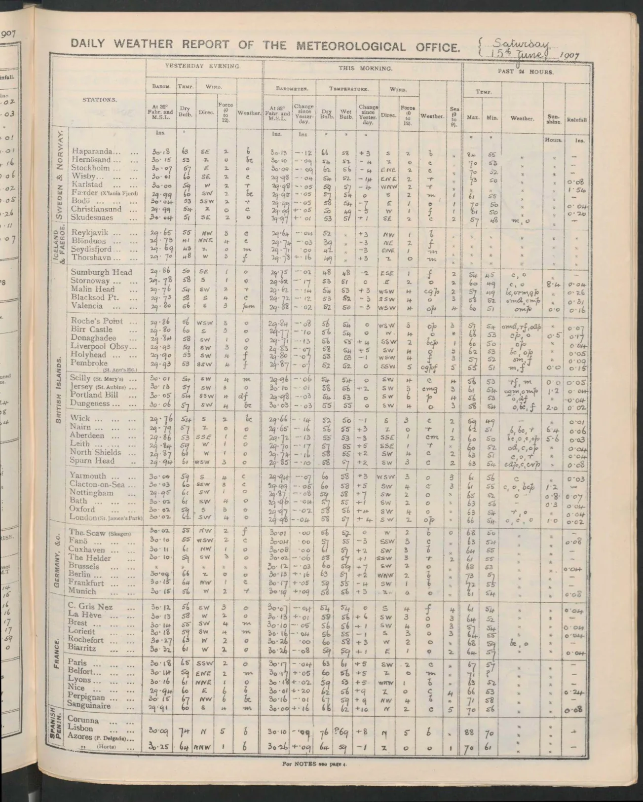
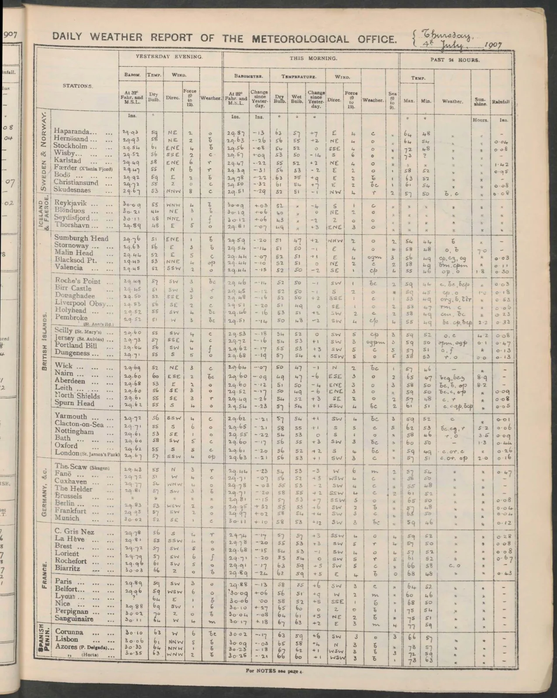
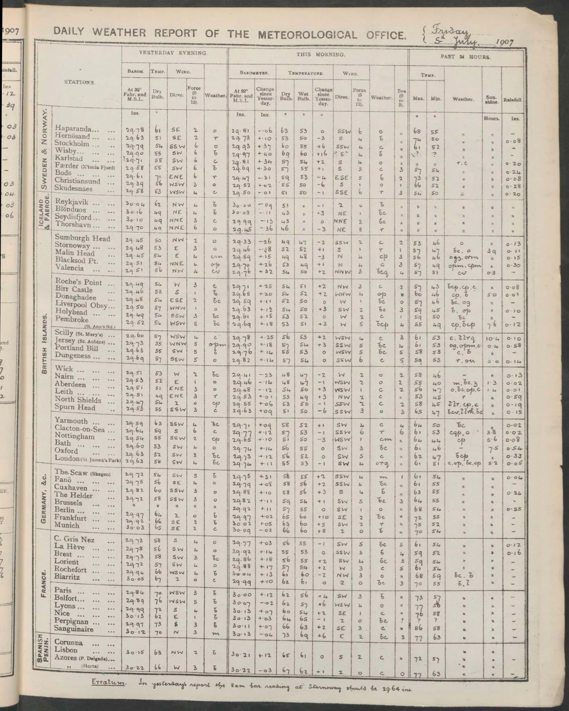

The Names He Carried · Case LBD-001
Was Laurence the Son of a Knight?
Sir Nathaniel Dunlop of Shieldhill
Of the two Dunlop men, Sir Nathaniel has the stronger documented connection to Shieldhill in 1906. A July newspaper places him there welcoming visitors. Binnie was a medical doctor, as remembered in the family account, but his whereabouts that autumn remain open. The birth registration names neither man.
The case for Sir Nathaniel
Read the dated sightings, the original newspaper clipping, the role of Ellen Dunlop, and a comparison of uncle and nephew. The full discussion also considers what evidence would change the finding.
Read The Case for Sir Nathaniel DunlopFor our family
Laurence’s daughter has told her son the same story since he was young. She said without hesitation that Laurence’s father was a doctor at the Shieldhill estate and that a gardener took Laurence in.
The doctor. The owner of Shieldhill, Sir Nathaniel Dunlop, was made an honorary Doctor of Laws in April 1907, two months before Laurence was born, and the newspapers began calling him "Dr. Nathaniel Dunlop." He also had a nephew who was a medical doctor, Binnie Dunlop. Sir Nathaniel is the stronger estate lead on the dated evidence. Laurence’s birth entry leaves the father’s name blank. We still do not know who his father was.
The gardener and the main house. Alexander Archibald was a gardener. In 1901 the census gave his address as “Shieldhill”. It lists his wife Annie and a servant, Susan Cumisky, in his household. He may have lived in the main house. The entry uses only the name “Shieldhill”.
Where Agnes and Laurence appear in the records. Alexander’s sister Mary lived at Gean Tree Cottages in 1901. When Agnes Brown registered Laurence’s birth in 1907, she gave her home as Gean Cottage, Shieldhill. By 1911, three-year-old Laurence was living with Lizzie Douglas. We still do not know who first took the baby in or who introduced Agnes to Lizzie.
Printable file
- PDF · 272 pagesCase presentation and all 100 exhibits
Letter size, for printing. About 30 MB. - PDF · large print · 25 pagesThe case presentation only, in large type
For printing and reading on paper - PDF · large print · 64 pagesFamily edition: the case, 14 key documents, walking maps and weather
For printing and reading on paper
The presentations
- November 22, 2026Case presentation: who fathered Laurence? (Claude)
Nine parts: the Dunlops, the gardener and his sister, the hospital, where the baby went, the witness, the theory, the defense, the assessment, the records that could settle it - November 22, 2026Case presentation: who fathered Laurence? (ChatGPT)
A second presentation of the same evidence
The walk from the hospital
- 0.19 milesStraight-line distance, hospital door to 18 Lochrin Place
About 330 yards, measured from map coordinates - 0.26 mileWalking route: west on Lauriston Place, through Tollcross, into Lochrin Place
Roughly 5 to 7 minutes. Opens Google Maps walking directions. - 0.41 milesHospital to the St Giles registrar, 24 Forrest Road, where Agnes registered him on 4 July 1907
Straight line. From 18 Lochrin Place it is about 0.58 miles.
The hospital, the Douglas home and the registrar
Agnes gave birth at 9 p.m. on Friday, June 14, 1907, at the Royal Maternity Hospital, 79 Lauriston Place. The Edinburgh voting records for that year list Robert Douglas at 18 Lochrin Place. By 1911, the census lists Lizzie, Janet and Laurence at 16 Lochrin Place on the same street.
From the hospital to the Douglas home
About a quarter of a mile (412 metres). From the hospital, walk west along Lauriston Place to Tollcross. Take Home Street south, then turn right into Lochrin Place. No. 18 is about 70 metres along. Today this walk takes about five or six minutes.

From the Douglas home to the registrar
About two-thirds of a mile (1,083 metres). From No. 18, turn left from Lochrin Place into Home Street. At Tollcross, go east along Lauriston Place. Pass the hospital, continue onto Teviot Place, then turn left into Forrest Road. The registrar’s office was at No. 24.
Agnes signed as the mother on Thursday, July 4, twenty days after the birth. The register spells her son’s name Lawrence Brown. She could have visited Lizzie in those twenty days. We do not know where she slept, when Laurence first stayed with Lizzie, or when Agnes left Edinburgh.

If Agnes came by train before the birth
We have no record of the train Agnes took, when she arrived or whether she walked. The two maps show what the journey to the hospital would have involved on foot. The distances follow modern pavements. The uphill figures compare the height at the start and finish.
From the old Princes Street Station it was about half a mile (893 metres), with the hospital about 39 feet higher. This station served the Caledonian Railway, which also served the Biggar area. The walk runs south along Lothian Road and Earl Grey Street, then east on Lauriston Place.

From Waverley Bridge outside Waverley Station it was just over a mile (1,733 metres), with the hospital about 89 feet higher. This route goes uphill along Cockburn Street to the Royal Mile, then by George IV Bridge and Forrest Road to Lauriston Place.

Maps © OpenStreetMap contributors. Walking routes from OSRM. Approximate heights from Mapzen terrain.
What was the weather like?
The weather observer at nearby Leith kept a written record. These are the readings for the two days we know Agnes was in Edinburgh.
June 14, the day Laurence was born
At 8 a.m. it was 52°F. The air was calm and clouds covered about three-quarters of the sky. By 6 p.m. it was 59°F and overcast. Laurence was born three hours later, at 9 p.m.
July 4, the day Agnes registered him
At 8 a.m. it was 50°F and overcast. At 6 p.m. it was 49°F and raining. The register gives no time of day, so we cannot tell whether Agnes went out in that rain.
Read the weather and original reports in the family edition








Weather sheets from the UK Meteorological Office. Contains public sector information licensed under the Open Government Licence v3.0.
All evidence, in file order
- November 20, 1848Marriage index of John Macdonald and Janet Page
Item 77 - March 30, 18511851 census at 6 Semple Street, Weavers Close
Item 78 - August 7, 1853Birth index of Ann Alison Macdonald
Item 79 - April 7, 18611861 census: 50 Abbotsford Place, Glasgow
Item 1 - April 7, 18611861 census at 3 Robb’s Entry
Item 80 - January 2, 1863Marriage index: Archibald Douglas and Isabella Gray
Item 56 - October 23, 1864Birth index: Mary Archibald
Item 57 - December 6, 1870Birth index: Alexander Archibald
Item 58 - April 2, 18711871 Scotland census indices: Mary and Alexander Archibald
Item 59 - April 2, 18711871 census at Hall, Liberton
Item 81 - May 31, 1874Birth index of Elizabeth Miller Mc Donald
Item 82 - May 31, 1874Birth registration of Elizabeth Miller McDonald, Liberton, entry 70
Item 94 - August 3, 1874Birth index entry: Binnie Dunlop
Item 2 - May 8, 1876Birth registration: Robert Douglas
Item 3 - April 3, 18811881 census: 18 Carlton Place, Glasgow
Item 4 - April 3, 18811881 Scotland census index: Archibald Douglas
Item 60 - April 3, 18811881 census of John and Elizabeth MacDonald, schedule 141
Item 83 - April 3, 18811881 census of Jannet Mudie, schedule 133
Item 84 - December 18, 1885Birth registration: Agnes McGarth Brown
Item 5 - April 5, 1886Death registration: George Brown
Item 6 - April 5, 18911891 census: Castle row, Quothquan, Libberton
Item 7 - April 5, 18911891 Scotland census index: Alexander Archibald
Item 61 - April 5, 18911891 Scotland census index: Archibald Douglas
Item 62 - April 5, 18911891 Scotland census index: Mary Archibald
Item 63 - April 5, 18911891 census of John McDonald and Janet Moodie at N Drum Street
Item 85 - April 5, 18911891 census of Elizabeth McDonald at 14 Wilson Rd
Item 86 - January 13, 1895Death registration: William Brown
Item 8 - 1898–1899 and 1899–1900Edinburgh and Leith directory entries for 4 Hatton Place
Item 87 - 1899 (as catalogued)Directory of physicians and surgeons, pages 9–10
Item 10 - 1899–1921Medical Register entries: Binnie Dunlop
Item 15 - 1899–1943Binnie Dunlop in the UK and Ireland medical-register index
Item 92 - June 9, 1899Marriage registration: Robert Douglas and Elizabeth Miller McDonald
Item 9 - 1900Marriage index entry for William Doig and Janet Page Moodie
Item 88 - 19011901 Glasgow electoral index: Binnie Dunlop
Item 64 - March 31, 19011901 census: Gean Tree and Lime Tree Cottages, Quothquan, Libberton
Item 11 - March 31, 19011901 Scotland census index: Alexander Archibald
Item 65 - March 31, 19011901 Scotland census index: Mary Archibald
Item 66 - March 31, 19011901 census of Robert and Lizzie Douglas at 5 Beaumont Pl
Item 89 - March 31, 19011901 census of Janet Mcdonald, Gilmerton
Item 90 - March 31, 19011901 census of Janet Doig at Cameron’s Bdgs
Item 91 - March 31, 19011901 census of William Ruth Watson at 4 Hatton Place
Item 93 - April 1901Obituary: James Dunlop, M.D.
Item 12 - August 28, 1903Marriage registration: James Lawson Parker and Janet Crawford Stewart
Item 13 - 1905College register: Binnie Dunlop
Item 67 - 1906–07Robert Douglas at 18 Lochrin Place in the 1906–07 electoral roll
Item 95 - 1907Medical Register entry: Binnie Dunlop
Item 75 - 1907–08Robert Douglas at 18 Lochrin Place in the 1907–08 electoral roll
Item 96 - 1907–08St Giles registrar’s office at 24 Forrest Road
Item 98 - June 14, 1907Birth registration: Lawrence Brown
Item 14 - June 14, 1907Weather observations at Leith on June 14, 1907
Item 99 - July 4, 1907Weather observations at Leith on July 4, 1907
Item 100 - After 1907Reference book entry: Sir Nathaniel Dunlop
Item 16 - 1910–11Robert Douglas at 16 Lochrin Place in the 1910–11 electoral roll
Item 97 - 19111911 England census index: Binnie Dunlop
Item 68 - April 2, 19111911 census: 16 Lochrin Place, Edinburgh
Item 17 - April 2, 19111911 census: Shieldhill Mains and Gean Tree Cottage, Libberton
Item 18 - April 2, 19111911 census: 16 Springvalley Gardens, Morningside, Edinburgh
Item 19 - April 2, 19111911 census: 172 Gorgie Road, Edinburgh
Item 20 - April 2, 19111911 census: Rumblingwell, Dunfermline
Item 21 - August 28, 1911Marriage registration: Thomas McKay McKenzie and Agnes McGarth Brown
Item 22 - January 1912Pamphlet title page: Binnie Dunlop
Item 69 - May 6, 1912Birth registration: Mary Christina McKenzie
Item 23 - August 19, 1912School admission register: Queen Anne Infant School, Dunfermline, page 5
Item 24 - September 9, 1919Death registration: Robert Douglas
Item 26 - February 19, 1920Will of Sir Nathaniel Dunlop, pages 494–495
Item 27 - June 19, 19211921 census: 5 Foundry Street, Dunfermline
Item 28 - June 19, 19211921 England census index: Binnie Dunlop
Item 70 - 1928Photograph: Duchess of Bedford, dining saloon, A Deck, 1928
Item 29 - 1928Photograph: Duchess of Bedford, Drawing and Observation Room, Promenade Deck, 1928
Item 30 - 1928Photograph: Duchess of Bedford, Cabin No. 103, three berths, A Deck, 1928
Item 31 - November 1928Advertisement: Canadian Pacific, Duchess Cruises to the West Indies (The Mitre, p. 14)
Item 32 - September 7–13, 1929TSS Duchess of Bedford · Canadian Pacific Steamships · Laurence Brown and Janet Crombie
Item 33 - September 7, 1929Outward passenger list: Duchess of Bedford, Greenock
Item 34 - September 7, 1929U.S. alien passenger manifest, List D, left half: Duchess of Bedford
Item 35 - September 13, 1929U.S. alien passenger manifest, List D, right half: arriving Quebec and Montreal
Item 36 - September 15, 1929Border crossing card: Lawrence Brown, Detroit
Item 37 - April 14, 19301930 U.S. census: 1534 South Kostner Avenue, Chicago, sheet 3B
Item 38 - September 1931Booklet cover: Canadian Pacific, "The Duchesses"
Item 39 - September 1931Chart: Canadian Pacific Atlantic Track Chart
Item 40 - October 2, 1934Border crossing card: Elizabeth Anderson, Port Huron
Item 41 - 1937Providence city directory, 1937, page 561
Item 42 - 1938Providence city directory, 1938, page 563
Item 43 - 19391939 register index: Bennie Dunlow [Binnie Dunlop]
Item 71 - October 9, 1939Marriage license record: Lawrence Douglas and Constance Darcy
Item 44 - April 11, 19401940 U.S. census: San Francisco, sheet 62A
Item 45 - October 16, 1940Draft registration card: Laurence Brown Douglas
Item 46 - June 21, 1941Border crossing card: Lawrence Brown Douglas, Blaine
Item 47 - 1942Draft registration card: Albert Blake Darcy
Item 48 - February 11, 1943Petition for naturalization: Laurence Brown Douglas
Item 49 - May 6, 1943Affidavit of witnesses and oath of allegiance: Laurence Brown Douglas
Item 50 - July 27, 1946Obituary notice: Binnie Dunlop, British Medical Journal
Item 72 - October 1946Obituary notice: Binnie Dunlop, The Barrovian
Item 73 - 1947Pawtucket city directory, 1947, page 154
Item 51 - April 19, 1947Probate calendar entry: Binnie Dunlop
Item 76 - 1949 reference volumeBiography & Genealogy Master Index: Binnie Dunlop
Item 74 - 1950Providence city directory, 1950, page 214
Item 52 - 1960Providence city directory, 1960, page 287
Item 53 - 1961Providence city directory, 1961, page 259
Item 54 - March 11, 1961Obituary: Laurence B. Douglas, Pawtucket Times
Item 55 - UndatedArmy enlistment report: Thomas McKenzie
Item 25